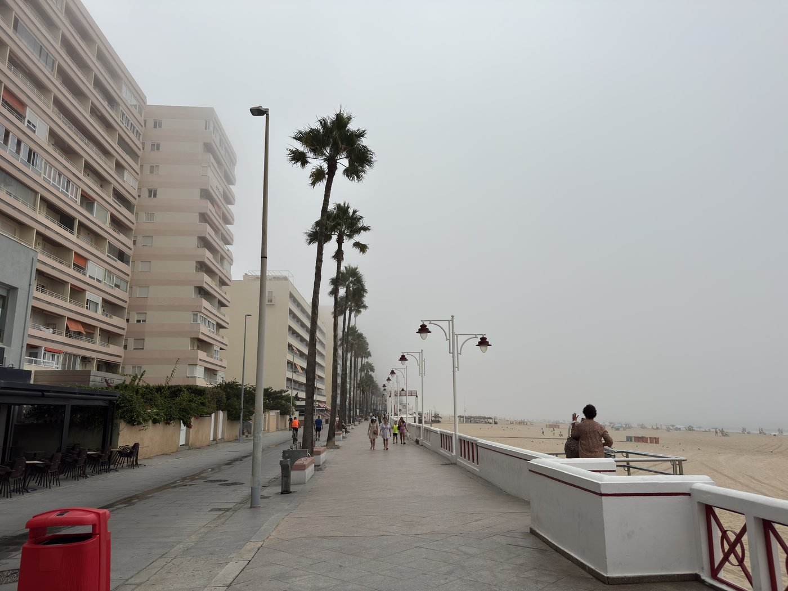
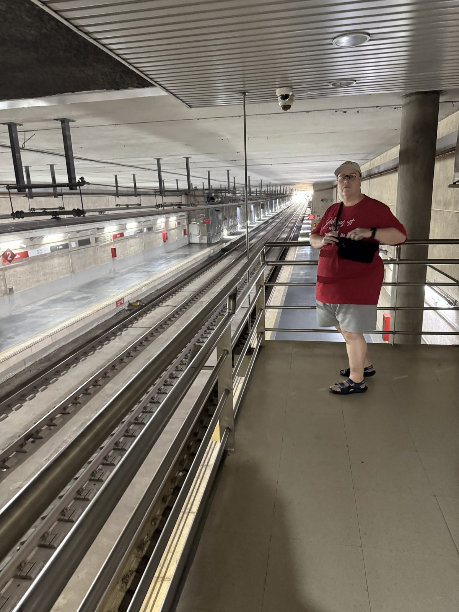
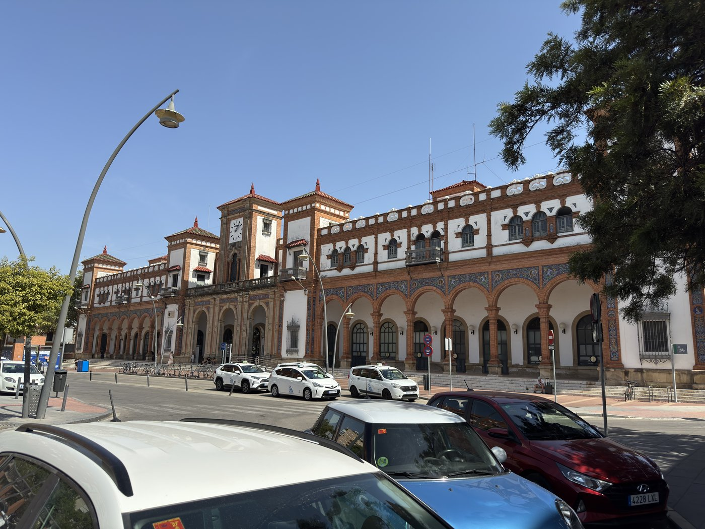
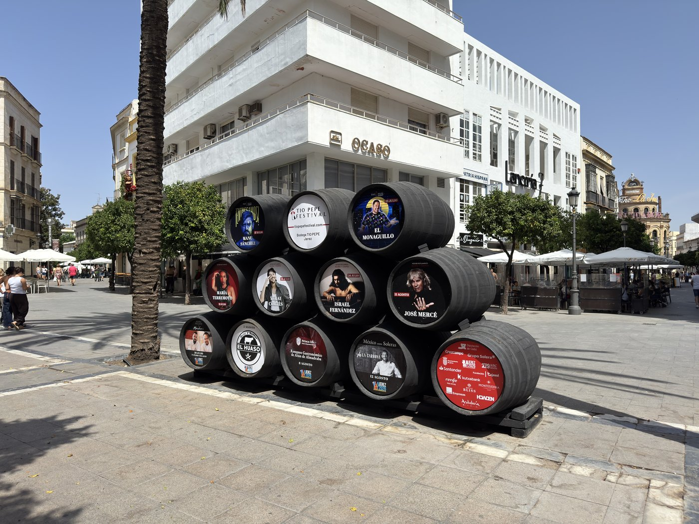
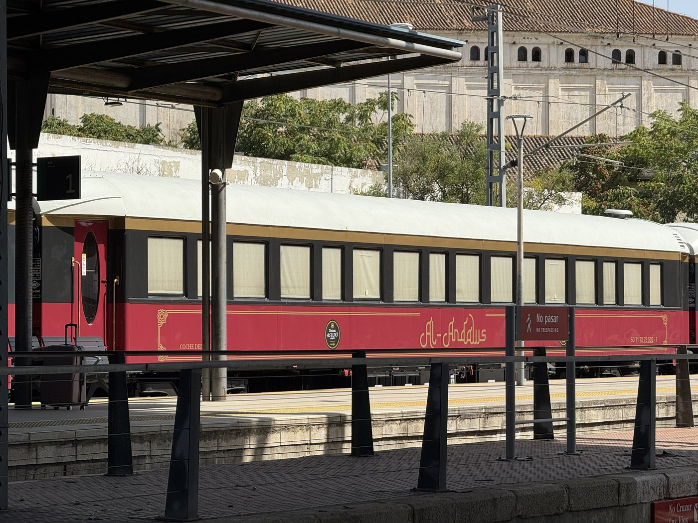
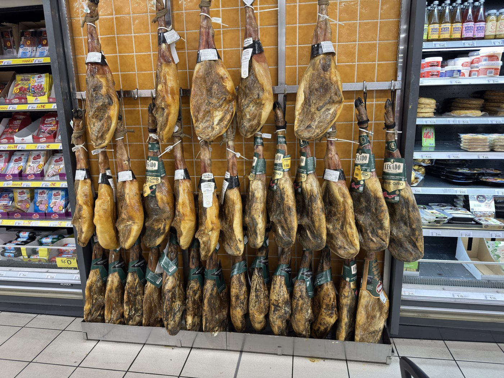

Der Pool hier öffnet erst um 10:30. Das hat einen unterschätzten Vorteil: Niemand kann um sechs die Liege mit dem Handtuch belegen und dann in Ruhe frühstücken gehen. Und da der Feriendruck Anfang September nicht mehr hoch ist, gab es auch kein Hauen und Stechen um die Plätze — es dauerte sage und schreibe fast fünfzehn Minuten, bis die letzte Liege belegt war.
Herrliches Wetter dazu. Bis wir gegen Viertel vor zwölf noch einmal hinausschauten und zu unserer großen Überraschung feststellten, daß die gesamte Umgebung weg war. Da war einfach so ein dicker Seenebel aufgezogen, von dem das Orakel von Meteosat natürlich wieder nichts gesagt hatte.

Spontan nach Jerez
Also habe ich — sehr zu Sassis Leidwesen — kurzerhand beschlossen, daß wir unbedingt einen Ausflug nach Jerez de la Frontera unternehmen sollten, dem Epizentrum der Sherryproduktion. Ihr Leidwesen hatte einen Grund: Die Läden in Jerez schließen um 14:30 bis um 18 Uhr, und der plötzlich sehr enge Zeitplan für den nächsten Zug ließ ihr keine Ruhe, sich vorzubereiten. Das war nicht meine feinste Stunde.
Zum Bahnhof sind wir gelaufen: Das Stadion des Cádiz CF liegt hier gleich um die Ecke, mitten in der Stadt, und dort gibt es eine Station der Cercanía — wörtlich „Nähe", die spanische S-Bahn.
Diese Station ist eisenbahntechnisch etwas Besonderes: Bis San Fernando teilen sich reguläre Züge, die S-Bahn und Straßenbahnen dieselbe zweigleisige Strecke. Sie liegt unterirdisch und ist stockedunkel — die Fotos täuschen massiv. Wir dachten zuerst, sie sei vielleicht gar nicht in Betrieb, weil es so still war, obwohl durchaus Fahrgäste da waren. Und erstaunlich sauber.

Eine Stunde Fahrt für rund 24 Kilometer Luftlinie. Das relativiert sich etwas, weil die Strecke ziemlich durch die Marschlande der Bahía de Cádiz mäandert — vom Stadion bis zum Bahnhof Jerez sind es rund 45 Streckenkilometer. Die Züge sind modern, schnell und sauber, aber auch ein bisschen unpünktlich und seltsam organisiert. In dem Punkt stellen sie die Deutsche Bahn nicht ganz in den Schatten.
Kaum hatten wir den Atlantik im Rücken, hatten wir auch schon wieder schönste Sonne. Die Nebelwolke hatte nur die Küste im Griff — bei unserer Rückkehr war sie komplett aufgelöst.
Palo Cortado
In Jerez fiel mir als erstes ein Zug auf, der auch bei unserer Rückkehr noch im Bahnhof stand: der Al Andalus, eine Art Kreuzfahrtzug, der in sieben Tagen von Sevilla über Jerez, Cádiz und Córdoba nach Madrid fährt und an jeder dieser Stationen einen Tag hält.

Auf leichten Irrwegen durch die Straßen ging es Richtung Innenstadt, und dort haben wir erstmal eine schöne Flasche Sherry aus der Region gekauft, einen Palo Cortado — komplett auf Spanisch, zur sichtlichen Freude des Ladeninhabers. Ich breche mir dabei immer noch ziemlich einen ab, aber ein kleiner Erfolg war es trotzdem.

Von dort war es nicht weit zur Plaza del Arenal, wo wir zu Mittag aßen — und ich endlich dazu kam, eine Paella zu bestellen. Hier ist sie, anders als in den Restaurants, die wir auf Gran Canaria ausprobiert hatten, ganz normal als Einzelportion zu haben und nicht immer erst ab zwei Personen.
Dummerweise hat danach das Freßkoma so zugeschlagen, daß wir uns den Alcázar, den maurischen Palast, doch nicht mehr angeschaut haben.
Das komplette Chaos
Stattdessen fuhren wir direkt zurück — und hatten dabei die volle Erfahrung mit der spanischen Eisenbahn.
Erstens sind die Gleise komplett konfus numeriert. Direkt am Bahnhofsgebäude oben im Bild liegt Gleis 4, und das liegt an zwei Bahnsteigen. Der zweite Bahnsteig versorgt die Gleise 4 und 2; Züge auf Gleis 4 können also auf beiden Seiten die Türen öffnen. Theoretisch — denn die Drehkreuze für den Nahverkehr gibt es nur am zweiten Bahnsteig, Gleis 4 ist für den Fernverkehr ohne Drehkreuze. Dann folgt zwischen Gleis 2 und 3 ein Servicebahnsteig, und erst dahinter der Passagierbahnsteig für die Gleise 1 und 3, an dem auch der Al Andalus stand. Muß man nicht verstehen.
Zweitens hätte unsere S-Bahn um 15:57 abfahren sollen. Fahrtrichtung vom Bahnsteig aus gesehen nach rechts, Richtung Cádiz — ich erwartete also eine Einfahrt von links. Kam nicht. Kurz nach vier fuhr plötzlich ein Zug von rechts ein, also aus Cádiz kommend, aber mit Anzeige „Jerez", nicht „Aeropuerto", wo die Endhaltestelle dieser Strecke liegt. Er stand recht lange da, und sehr viele Leute waren sofort eingestiegen.
Irgendwann fragte ich eine Mitarbeiterin, ob das der Zug nach Cádiz sei — an der Anzeigetafel stand immer noch nichts. Sie bejahte. Also stiegen wir ein und lösten eine Völkerwanderung aus, weil einige Leute wie wir noch gewartet hatten. Nur um dann alle wieder hinausgeschickt zu werden, auch die, die vor uns eingestiegen waren: Der Zug sollte abgestellt werden. Türen zu, Zug fährt — eine Zuglänge weit, und bleibt wieder stehen. Noch immer am Bahnsteig, nur jetzt außerhalb der Drehkreuze.
Während wir noch rätselten, was das soll, kam ein weiterer Zug von rechts, auch mit Passagieren. Dieser wendete direkt, und das war dann der, mit dem wir heimfuhren.

Theoretisch hätten wir in El Puerto de Santa María noch auf die Fähre umsteigen können. Wir entschieden uns für den direkten Heimweg — die Fähre sollte uns eine Woche später noch beschäftigen.
Schinkenwand
Am Stadion stiegen wir wieder aus und kauften ein paar Kleinigkeiten im dortigen Supermarkt, unter anderem frisch gepreßten Orangensaft. Der Laden ist bestimmt fünf- oder sechsmal so groß wie die Filiale unten im Hotel, und die Schinkenwand ist noch ein ganz anderes Kaliber. Es gab sogar eine zweite davon. Hätte ich daheim eine gescheite Jamonera, wäre ich wirklich versucht gewesen, einen im Handgepäck mitzunehmen.

Zum Abschluß selbstverständlich noch einer der leckeren Erdbeermilchshakes der Eisdiele Mira — lag ja ohnehin auf dem Weg. Und man merkt, daß die Tage kürzer werden: Der Untergangspunkt der Sonne wandert stetig von Westnordwest Richtung West. Damit wird er langsam auch direkt von unserem Balkon aus sichtbar.